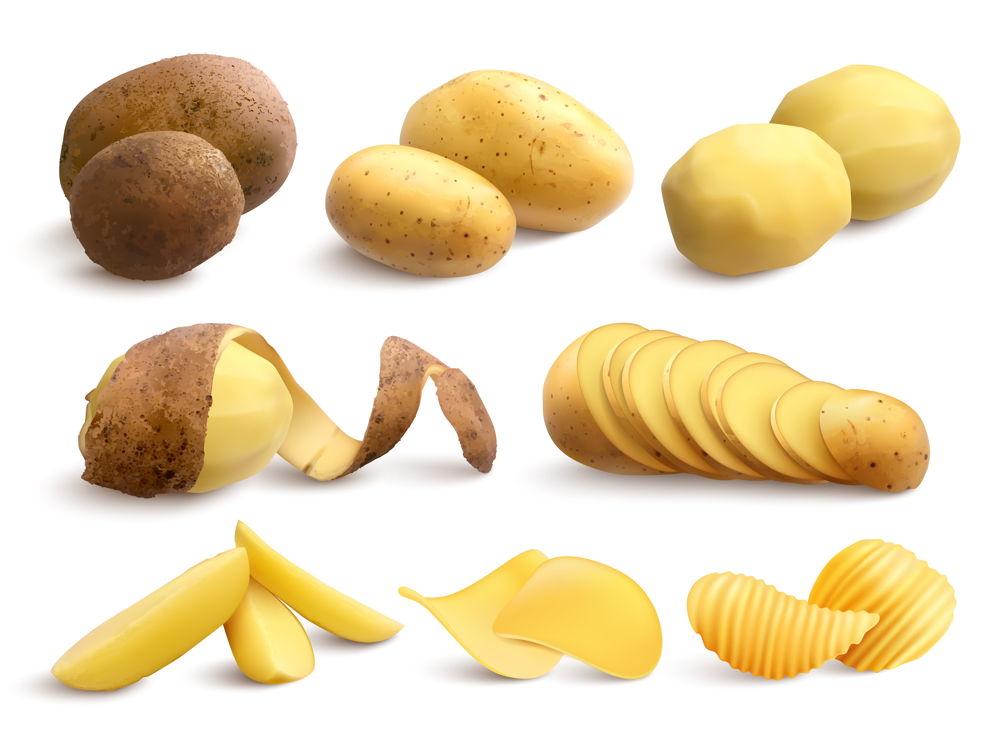

Comparte momentos de calidad en Familia
Tortilla de patatas
Ingredientes:
Pelamos y lavamos las papas, las cortamos en rodajas finas al igual que la cebolla. Ponemos ambas cosas en una sartén y cubrimos de aceite de oliva virgen extra, dejamos que se hagan a fuego medio-suave hasta que comiencen a dorarse. Las sacamos de la sartén y escurrimos bien. Ponemos en un recipiente, aparte batimos los huevos y los añadimos a las papas y a la cebolla, añadimos un poco de sal y mezclamos. Dejamos un par de minutos que se mezclen bien. Ponemos en la sartén un par de cucharadas de aceite de oliva virgen extra y vertemos todo. Cuando veamos que ya está cuajada por abajo ponemos un plato o una tapa encima de la sartén y le damos la vuelta rápidamente. Dejamos unos minutos más (2 o 3 si te gusta más cuajada, menos si te gusta jugosa).